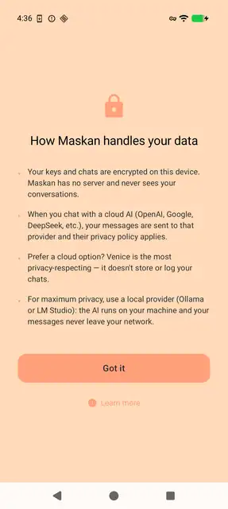
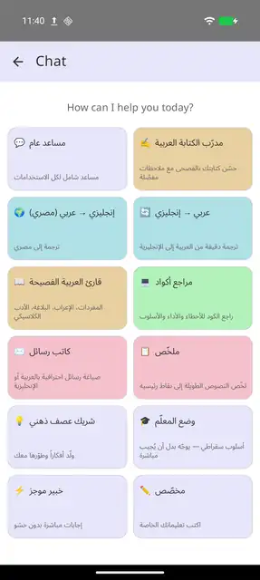

مسكن — دردشة ذكاء اصطناعي خاصة
ذكاء اصطناعي
مسكن — دردشة ذكاء اصطناعي خاصة ومتعددة المزودين لأندرويد. استخدم مفتاح API الخاص بك من OpenAI أو Anthropic Claude أو Google Gemini أو DeepSeek أو Groq أو Mistral أو OpenRouter أو Together AI أو أي نقطة وصول متوافقة مع OpenAI بما في ذلك النماذج المحلية (Ollama، LM Studio). محادثاتك تبقى على جهازك. مف
✓ ترخيص مفتوح (GPL-3.0-only) · آخر تحديث: 2026-10-29
2.7.1الإصدار
34.6 MBالحجم
GPL-3.0-onlyالرخصة
Open in Kanzتحميل APK (34.6 MB)
Download APK
SHA-256: eaec2e00f60cafcedb65a7885d7bed4eff4cef8fec3efb053d4089622434427d


امسح الكود لفتح صفحة التطبيق
Scan to open this app page
لو كنز مش متثبت عندك: نزّل متجر كنز.
Not installed? Get the Kanz store.